Sempre gostei de mexer em programas de Design, meu primeiro contato foi com CorelDraw, quando tinha cerca de 8-9 anos, e desde então
comecei a mexer um pouco, mais tarde me apronfudei por conta do meu curso de Técnico em Informática, onde aprendi a mexer. E hoje em
dia fiz recentemente dois cursos de Design, além de modelagem em AutoCAD e 3D Studio Max. Além de Design fiz alguns cursos de programação,
backend, frontend, banco de dados e games. Fiz curso de Excel Avançado, Power BI Avançado, Gestão de Pessoas e entre outros que estará na
parte sobre mim.
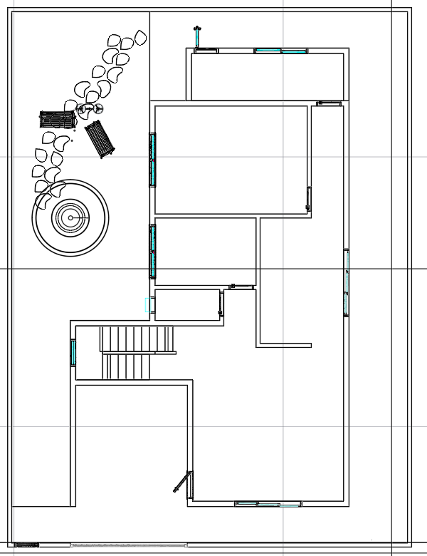
Planta baixa do primeiro andar
Representação da modelagem 2D da planta da casa, neste slide, primeiro andar.
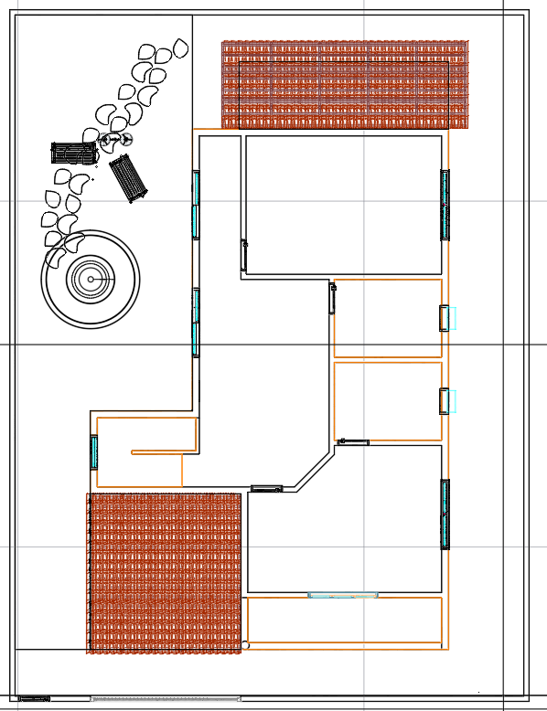
Planta baixa do segundo andar
Representação da modelagem 2D da planta da casa, neste slide, segundo andar.
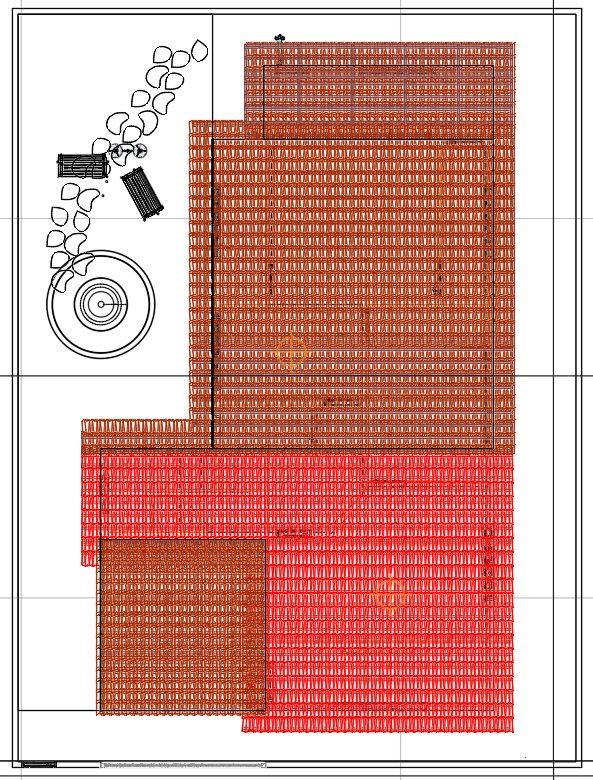
Planta baixa do teto
Representação da modelagem 2D da planta da casa, neste slide, o teto da casa.
Modelagem 3D
Este projeto foi feito para praticar modelagem 3D e 2D. Feito no AutoCAD, com o intuito de praticar toda parte por trás
de uma planta de casa, desde a parte base onde se tem o 2D, com todas as medidas até a parte 3D onde se tem os
detalhes, móveis e afins.
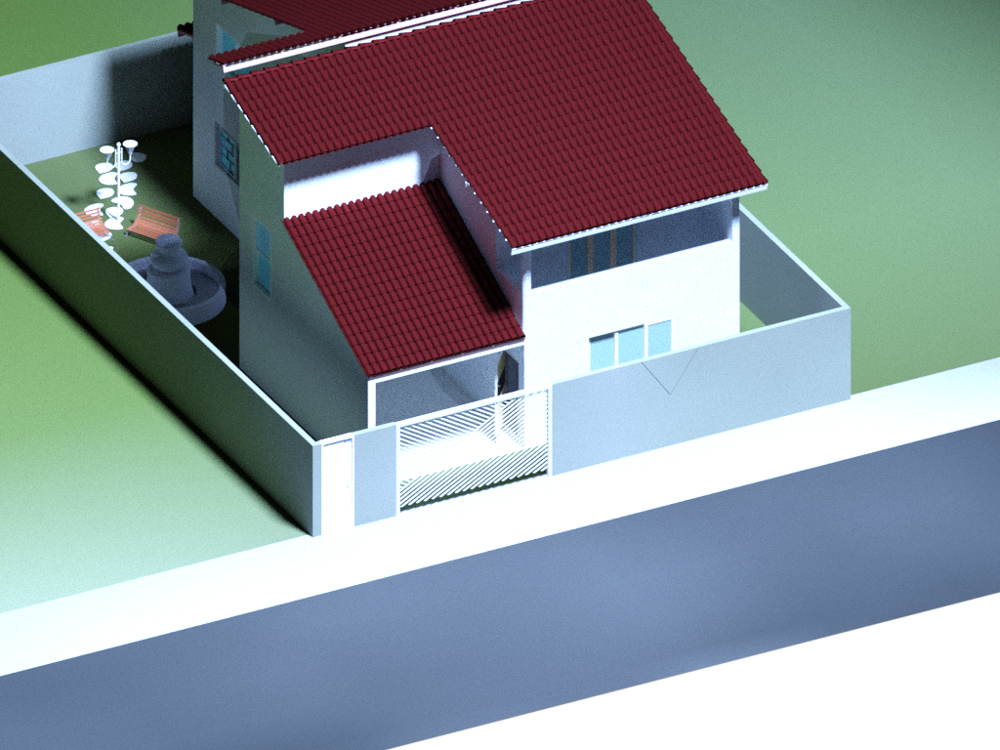
Trabalho de modelagem 3D, no AutoCAD, criado tudo desde a parte 2D com todas medidas e a modelagem em 3D.
Me acostumei a criar sempre o 2D e desenvolver o 3D por cima dele, fiz alguma coisas em 3D Studio Max já e
também já mexi com Blende3D, Fusion 360 e Sketchup. Tenho mais prática com o AutoCAD, mas acredito que qualquer
programa de modelagem conseguiria trabalhar, por conta de ter mexido em diversos.
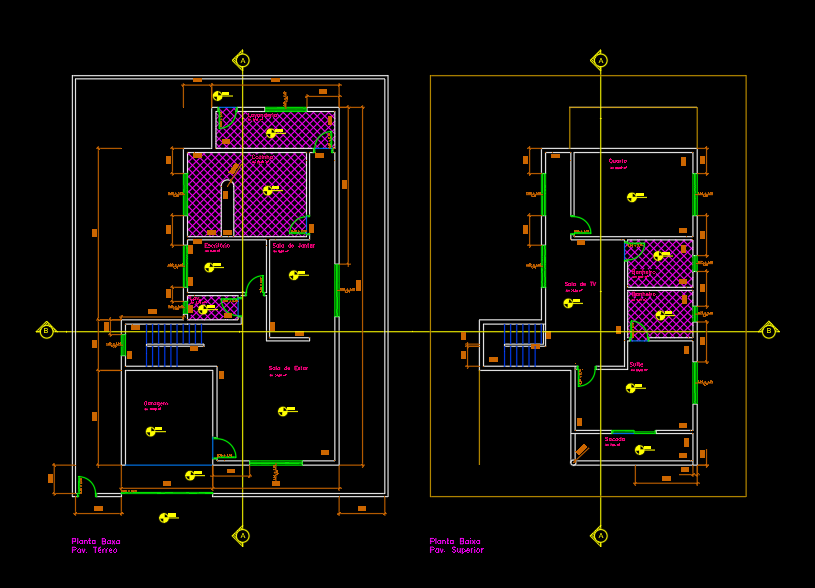
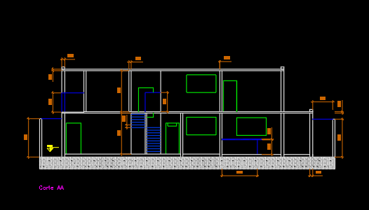
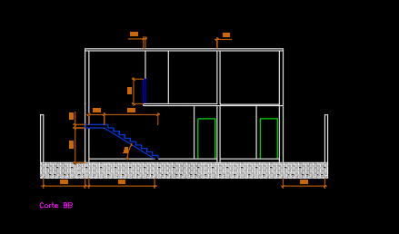
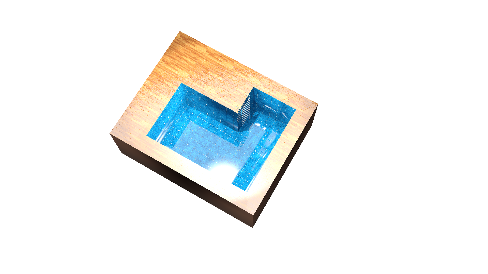
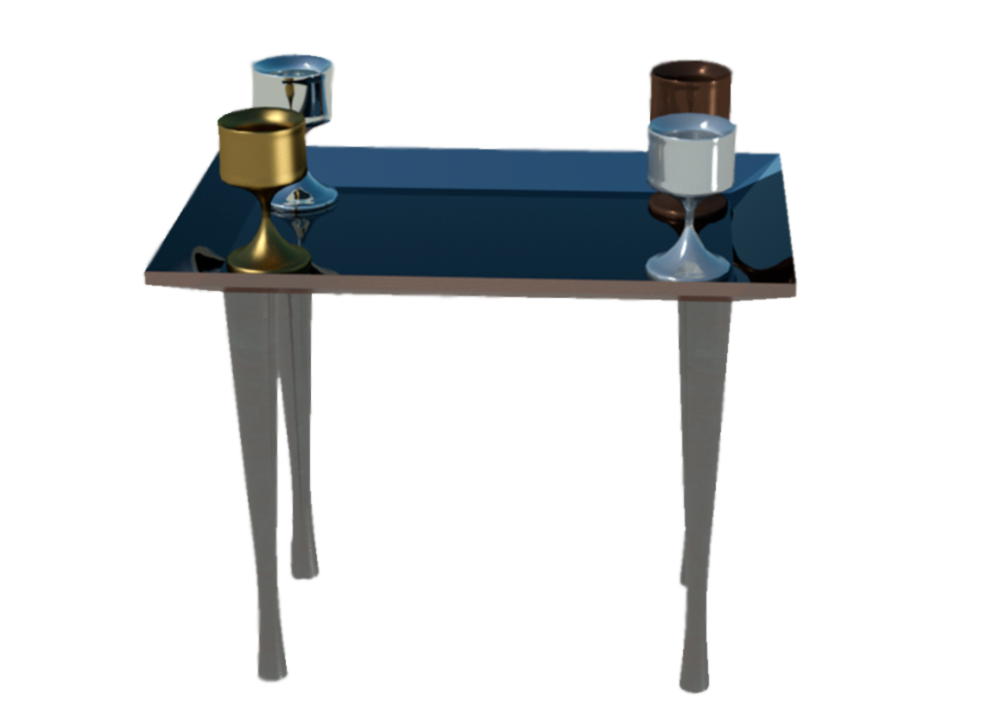
Programação
C#
Dentro desta parte eu fiz alguns projetos onde estará acessível dentro do meu github!
Mexi com WPF e Windows forms, com parte de backend.
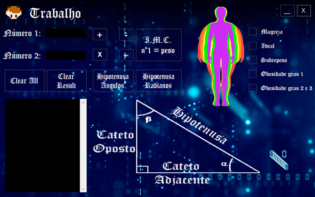
Java
Dentro desta parte eu fiz alguns projetos onde estará acessível dentro do meu github!
Maioria dos projetos, foram calculos, com base em números.
HTML e CSS e JS
Dentro desta parte eu fiz alguns projetos onde estará acessível dentro do meu github!
Tenho projetos feitos como, este portifólio mesmo, é um exemplo de HTML e CSS, juntamente com javascrript.
Há trabalhos apenas de HTML e CSS, assim como apenas de js, mas na sua maioria estão juntos, trabalhei com js
estudando node.js para fazer backend também.
PHP
Dentro desta parte eu fiz alguns projetos onde estará acessível dentro do meu github!
Fiz trabalhos de vários banco de dados locais, interações com chaves primárias e estrangeiras.
Design
Fiz alguns projetos de Design, como menu para lanches, panfletos, cartazes, cartão de visitas, layout para livros,
pdf interativos, edição de vídeos, criação de animações e por aí vai. Tentei criar de tudo para aprender de tudo na área,
o que realmente me falta para se aperfeiçoar é a criatividade, que infelizmente não tenho muito dela. Utilizo na maioria
o Photoshop para criação das artes, mas já mexi e tenho conhecimento com diversos programas, como, InDesign, Illustrator,
CorelDraw, After Effects, Premiere, Gimp, Inkscape e por ai vai, mexi mais com esses citados, mas acredito conseguir mexer
com qualquer programa de Design oferecido.
Cartão de visitas (Frente)
Neste projeto eu desenvolvi um cartão de visitas modelo, frente e verso.
Cartão de visitas (Verso)
Neste projeto eu desenvolvi um cartão de visitas modelo, frente e verso.
Leão sobreposto
Neste projeto foi feito uma sobreposição de iamgens usando a floresta e o leão.
Tigre 3D
Neste projeto foi feito a difusão do RGB do tigre, transformando assim em 3D.
Guitarra
Neste projeto foi utilizado efeitos e filtros para criar um cartaz do dia do rock.
Pop-up
Neste projeto foi desenvolvido um pop-up com a imagem.
Cabine velha
Neste projeto foi tratado com efeitos para envelhecimento da imagem.
Colorindo Imagem
Neste projeto foi colorir uma imagem preto e branco.
Mosaico
Neste projeto foi criado um mosaico com varias fotos .
Efeito Neon
Neste projeto foi criado um efeito neon, escurecendo a foto, criando letras neon.
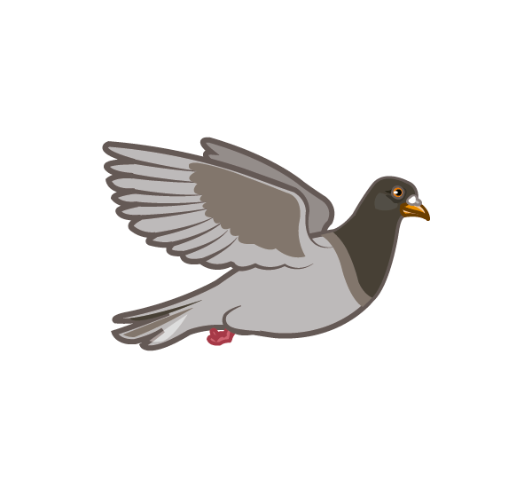
Gif
Neste projeto foi criado um gif no photoshop
Power BI
Criei diversas planilhas no Excel, pois fiz duas vezes Excel Avançado, uma versão dele em 2019 e em 2021, fiz dois módulos em cada vez,
Excel Básico e Excel Avançado. Fiz Power BI Avançado, desenvolvi diversas planilhas e até mesmo um banco de dados no excel, cheguei a programar nele,
mas não vejo tantas necessidades da programação dentro do excel, por conta dele ter diversas funções próprias e conseguir utilizar para a maneira que quiser,
já cheguei a fazer de tudo no excel, mas nada muito elaborado pois não tive este tempo, mas tenho domínio nele e no Power BI.